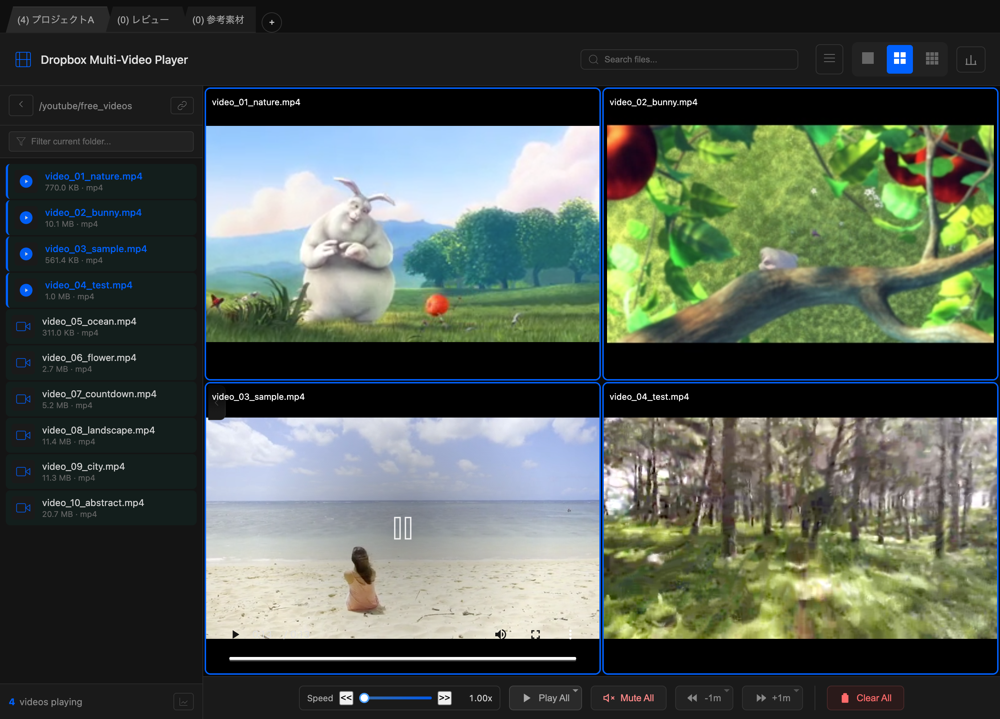
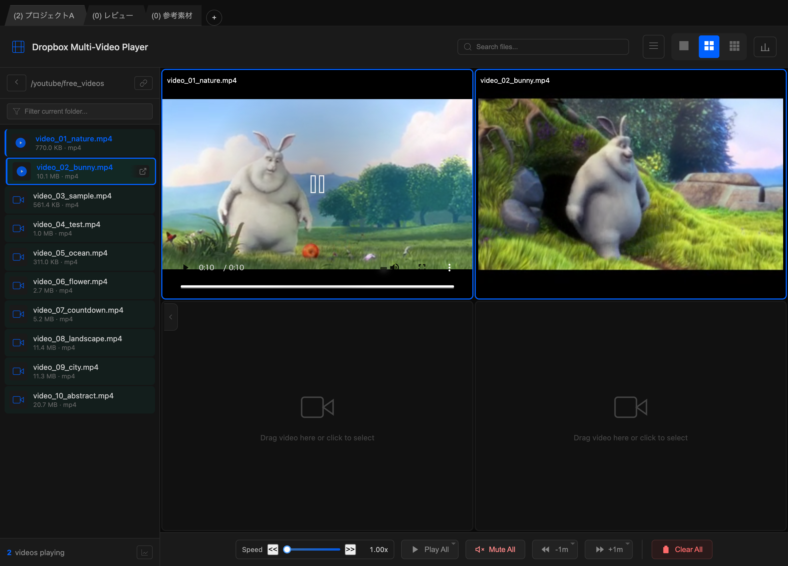
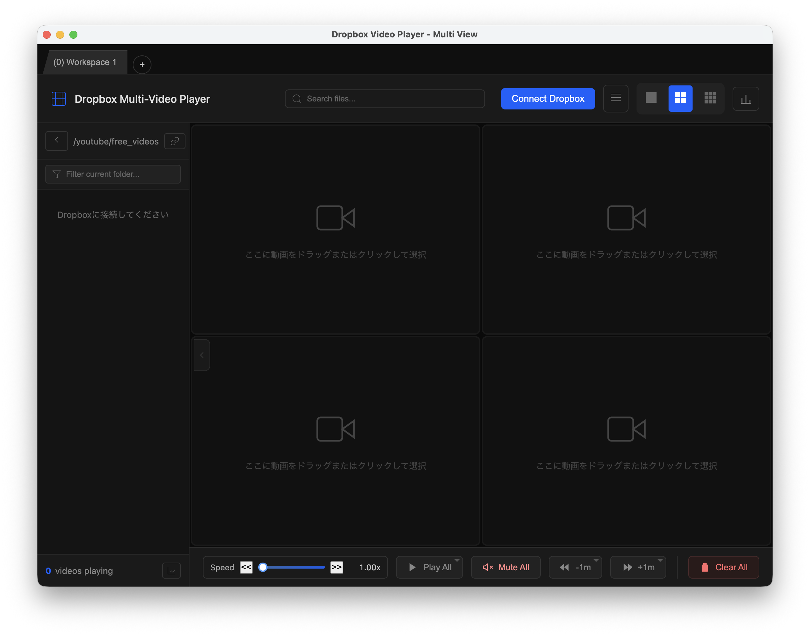
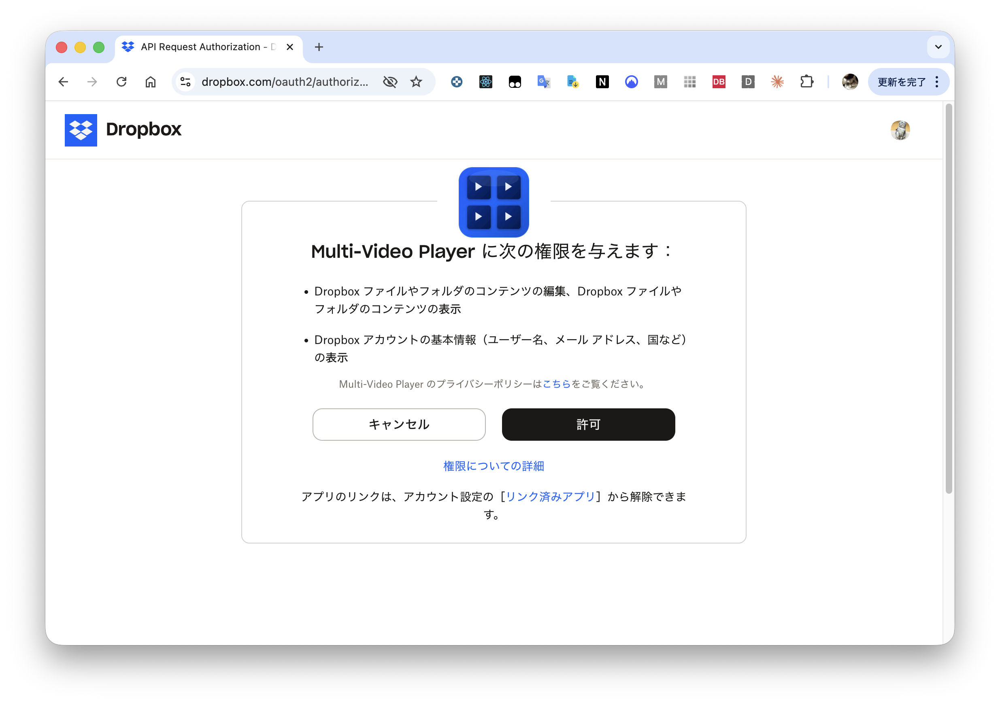
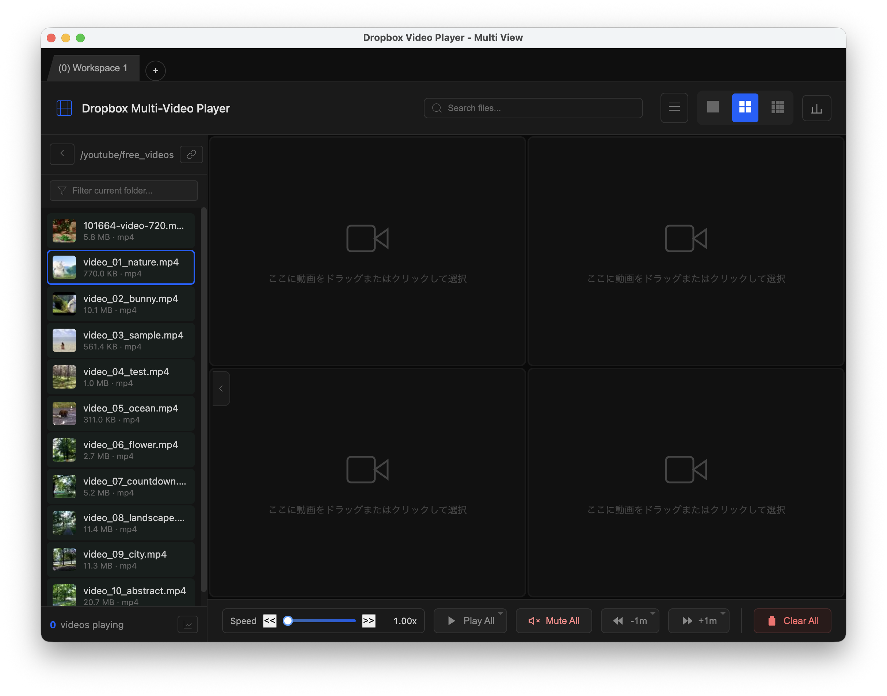
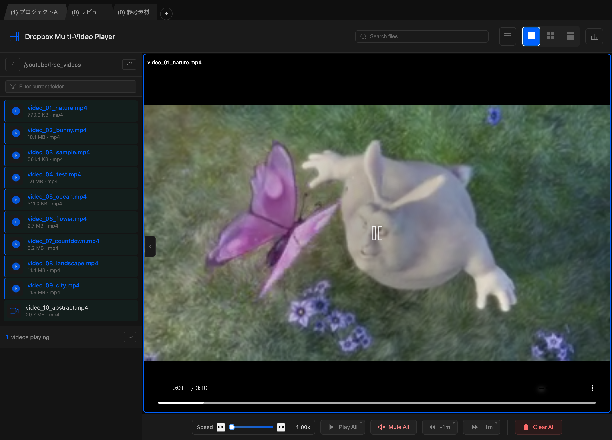

複数動画を同時再生
最大9枠まで同時表示。複数候補を並べて見比べられます。
複数の動画を並べて再生し、見比べながら確認できるmacOSアプリ。 映像制作のカット比較、教材の確認、レビュー作業など、 複数動画を行き来する場面に。レイアウトは1x1〜3x3で切り替え可能。
※ 本アプリはDropboxにあるファイルを再生するツールです。Webサイトから直接ダウンロードする機能は提供しません。コンテンツの権利・各サービス規約を遵守してください。再生の軽快さは回線/環境/ファイルにより変わります。

Dropbox Webのプレビューは便利ですが、複数同時に見比べたり、レイアウトを頻繁に切り替えたりする用途では手間が残ります。 本アプリは「並べる」「切り替える」「すぐ再生する」を重視したUIです。
最大9枠まで同時表示。複数候補を並べて見比べられます。
1x1 / 2x2 / 3x3 で切り替え。用途に合わせて“見える量”を調整できます。
タブで複数の作業状態を保持。プロジェクトごとに動画セットを切り替えられます。
全動画の再生/停止/先頭シークをワンクリック。比較作業のテンポを上げます。
ローカルプロキシで複数動画の並列ストリーミングを安定化。ブラウザの接続数制限を回避。
サイドバーからスロットへ直接ドラッグ。スロット間の入れ替えもマウスで。
数字キーで位置ジャンプ、矢印キーで60秒シーク。マウスに手を伸ばさずテンポよく操作。
再生速度を1〜5倍で調整。長い動画のレビュー作業を効率化。全動画に一括適用も可能。
URL スキームでファイルマネージャーなど外部ツールから動画を開ける。ストリーミングプレイヤーとして使用可能。
再生位置・レイアウト・フォルダを自動保存。アプリを閉じても次回起動時に復元。
アプリの基本的な流れを紹介します。

Multi-Video Player uses secure OAuth 2.0 to connect to your Dropbox account. Your password is never shared with the app.
本アプリはOAuth 2.0を使用してDropboxに安全に接続します。パスワードがアプリに共有されることはありません。
Click "Connect Dropbox" button in the app.
アプリ内の「Connect Dropbox」ボタンをクリック。

Review the requested permissions on Dropbox's official page and click "Allow".
Dropbox公式ページで権限を確認し「許可」をクリック。

After authorization, browse and play your videos immediately.
認証完了後、すぐに動画の閲覧・再生が可能になります。

All video playback happens locally on your Mac. No data is uploaded to external servers.
すべての動画再生はMac上でローカルに行われます。外部サーバーへのデータ送信はありません。
アプリの主要機能をご紹介します。




Mac App Storeの自動更新サブスクリプションです。
よくあるご質問をまとめました。
Dropbox内の動画を複数同時に再生し、レイアウトを切り替えながら見比べられます。 ワークスペース機能で作業状態を保持し、一括操作で複数動画をまとめてコントロールできます。
できません。本アプリはDropboxにあるファイルを再生するツールで、Webから直接ダウンロードする機能は提供しません。 コンテンツの権利・各サービス規約を遵守してください。
本アプリはChromiumベースのため、H.264 / VP9 / AV1 など幅広いコーデックに対応しています。 DRM保護された動画は再生できません。
URL スキーム仕様:
dbmvplayer://load?localPath={Dropbox同期フォルダ内のファイルパス}
パラメータ:
localPath (必須): Dropbox 同期フォルダ配下のファイルの絶対パス（URL エンコード必須）Swift サンプルコード:
let path = "/Users/koji/Library/CloudStorage/Dropbox/Videos/sample.mp4"
let encoded = path.addingPercentEncoding(withAllowedCharacters: .urlQueryAllowed) ?? ""
let urlString = "dbmvplayer://load?localPath=\(encoded)"
NSWorkspace.shared.open(URL(string: urlString)!)Shell サンプルコード:
open "dbmvplayer://load?localPath=/Users/koji/Library/CloudStorage/Dropbox/Videos/sample.mp4"Dropbox上の動画を扱う設計のため、基本的に必要です（将来の変更は未定）。
現時点ではmacOS専用です。
ご質問やお困りのことがありましたら、お気軽にお問い合わせください。
通常2営業日以内にご返信いたします。
We typically respond within 2 business days.